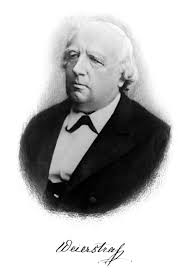
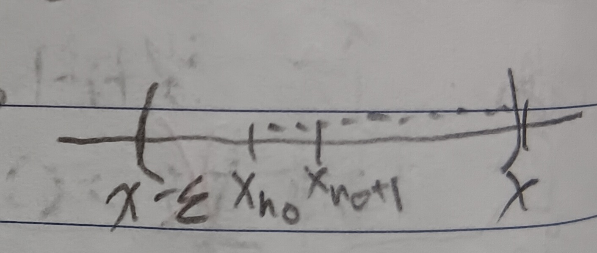

這份筆記是關於實數數列的收斂性質。
極限點
定義 1：極限點 (Limit Point)
給定一個實數數列\(x_1,x_2,\cdots\)和實數\(x\)。若所有\(x\)的開區間(i.e.包含\(x\)的開區間)都包含無限多個\(x_n\)，則稱\(x\)是\(\{x_n\}\)的極限點。
註記 1-1：極限(Limit)和極限點(Limit Point)的比較
我們有以下兩點性質：
1. 極限一定是極限點，但
2.
極限點不一定是極限。
例 1-1-1
考慮數列\(-1,1,-1,1,-1,1,\cdots\)。可以知道\(1\)和\(-1\)都是極限點，但它們都不是極限。
定義 2：有界 (Bounded)
給定一個實數數列\(x_1,x_2,\cdots\)。若\(\exists M>0\)使得\(\forall n\in\mathbb{N}\)，有\(|x_n|\leq M<\infty\)，則稱\(\{x_n\}\)有界。
定理 3：魏爾斯特拉斯定理I (Weierstrass Theorem I)
所有有界數列都有至少一個極限點。
證明：我們把這個點真的構造出來就好了。由於\(\{x_n\}\)有界，故有實數\(y_1,z_1\)使得對於所有的\(x_n\)都有\(x_n\in[y_1,z_1]\)。接著，我們進行以下的步驟：
1. 把\([y_1,z_1]\)分成兩等份\([y_2,z_2]\)和\([y_3,z_3]\)。必有至少一份有無窮多點(因為總共有無窮多點)，假設有無窮多點那一半是\([y_2,z_2]\)。
2. 把\([y_2,z_2]\)再分成兩等份，再挑出有無窮多點那份。
3.
一直重複以上步驟，可以建構出一串巢狀區間。令這串巢狀區間夾出的點是\(x\)，可以知道\(x\)就是我們要找的極限點(見下圖2)。QED
定理 4：魏爾斯特拉斯定理II (Weierstrass Theorem II)
所有有界數列都有收斂子序列。
證明：在定理3的證明中我們建構了一串巢狀區間。我們從每一個區間中都選出一個\(\{x_n\}\)中的點，就是收斂到\(x\)的子序列了。QED
單調數列
定義 5：單調數列 (Monotone Sequence)
若一數列\(\{x_n\}\)符合底下兩個敘述其中之一，我們稱此序列為單調數列：
1. \(x_1\geq x_2\geq x_3\cdots\)
2. \(x_1\leq x_2\leq
x_3\cdots\)
定理 6
單調有界數列必收斂。
證明：這裡只證明單調遞增數列的情形，遞減同理。
給定單調有界數列\(x_1\leq x_2\leq
x_3\leq\cdots\leq M<\infty\)。由定理3，這個數列有極限點\(x\)。我們希望說明\(\lim\limits_{n\to\infty}x_n=x\)。
由定義1知每個包含\(x\)的開區間都有無窮多個\(x_n\)落在裡面(☆)。假如有\(x_{n'}\)使得\(x_{n'}>x\)，則令\(\epsilon_0=x_{n'}-x\)，因為\(\{x_n\}\)單調遞增，故對於所有\(k\geq n'\)，都會有\(x_k\geq x_{n'}\)，即\(x_k-x\geq\epsilon_0\)(見下圖3)。也就是\(x_{n'}\)之後的所有點都不會落在\((x-\epsilon_0,x+\epsilon_0)\)中，這個區間中只有\(n'\)個點，這和(☆)矛盾。故對於所有的\(x_n\)，我們都有\(x_n\leq x\)。
今給定一個區間\((x-\epsilon,x+\epsilon)\)，由極限點的定義知一定存在\(x_{n_0}\in(x-\epsilon,x+\epsilon)\)。於是有\(x-\epsilon<x_{n_0}\leq x\)(見上圖3)，且對於任意\(n\geq n_0\)有\(x-\epsilon<x_n\leq x\)(見下圖4)，故\((x-\epsilon,x+\epsilon)\)包含幾乎所有\(x_n\)，即\(x\)是\(\{x_n\}\)的極限。QED
柯西數列
定義 7：柯西數列 (Cauchy Sequence)
給定一數列\(\{x_n\}\)，若對於所有\(\epsilon>0\)，存在只和\(\epsilon\)有關的\(N>0\)使得對於所有\(n,m>N\)都有\(|x_n-x_m|<\epsilon\)，則稱\(\{x_n\}\)為柯西數列。

定理 8：柯西準則 (Cauchy Criterion)
一數列收斂若且唯若其為柯西數列。
證明：給定數列\(\{x_n\}\)。
(\(\Rightarrow\)) 若\(\{x_n\}\)有極限，令\(\lim\limits_{n\to\infty}x_n=x\)。則\(\forall\epsilon>0\), \(\exists N\) s.t. \(\forall n\geq N\), \(|x_n-x|<\frac{\epsilon}{2}\)。則 \[|x_n-x_m|\leq|x_n-x+x-x_m|\leq|x_n-x|+|x-x_m|<\epsilon,\forall
n,m\geq N\] \(Rightarrow\) \(\{x_n\}\)是柯西數列。
(\(\Leftarrow\)) 若\(\{x_n\}\)是柯西數列，則\(\forall\epsilon>0\), \(\exists N'>0\) s.t. \(|x_n-x_m|<\frac{\epsilon}{2}, \forall n,m\geq
N'\)。首先，我們知道\(\{x_n\}\)有界(除了有線多個點以外都落在\((x_{N'}-\epsilon,x_{N'}+\epsilon)\)中)
\(\Rightarrow\) \(\{x_n\}\)有極限點\(x\)。
\(\Rightarrow\) 使得\(|x-x_\tilde{m}|<\frac{\epsilon}{2}\)的\(\tilde{m}\)可以任意大(意即，可以比\(N'\)大)。
\(\Rightarrow\) \(|x-x_\tilde{m}|<\frac{\epsilon}{2}\),
\(|x_n-x|\leq|x_n-x_\tilde{m}|+|x_\tilde{m}-x|<\epsilon\)
\(\Rightarrow\) \(x\)是極限，\(\{x_n\}\)收斂。QED